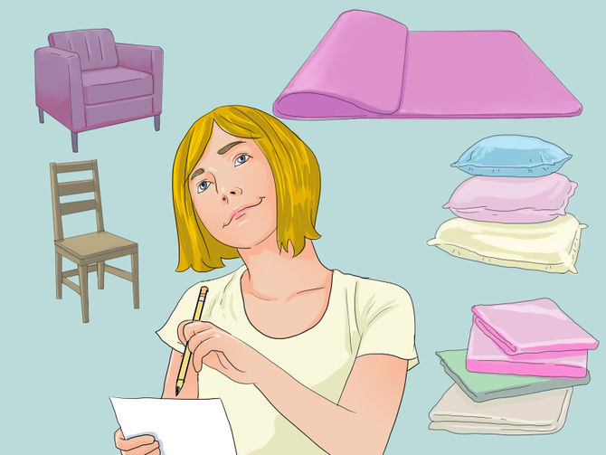

- What You'll Need
- Method 1
- Method 2
- Method 3
- Chairs/bed, dresser, couch, or table.
- Large sheets or blankets.
- Safety Pins or clothespins.
- Heavy books or objects.
- Pillows or cushions.
- Large area to build fort.
- A clean space to build fort
- Be sure you have appropriate supplies before you begin. A blanket fort typically uses blankets, but that is just a jumping-off point; most homes will be full of possible materials.
- Besides blankets, try: Pillows, sheets, baskets (to make an entrance) towels, or even a play mat to put on top of baskets.
- Blanket forts will need structural support. Typically this will come from chairs (such as dining room chairs), or other furniture (such as couches).
- Large sections of cardboard or extra-big boxes (such as appliance or moving boxes) can be super-useful to help strengthen the structure and create other rooms.
- Also consider some safety pins (or clothespins for younger children) to pin the sheets together to form a tent-flap style door.
-

- Choose an area that is out of the way of household traffic. Do not put it in the middle of a busy hallway, or in the kitchen.
A blanket fort is fun to play in and easy to build. You can use a bunk bed, dining table, chairs, a flipped-over couch, a windowsill, or other household items. Put blankets over all of the open areas that let light in, or just simply put in a lamp, and bring a flashlight or other safe light source in with you. Tell scary stories with friends late at night (or during the day if the blankets block enough light). You can even have a sleepover in it. Block extra holes by stuffing cushions, pillows, or crumpled-up blankets in the cracks, but make sure that they can hold up nice and strong. To make it even more fun, try bringing an ipad, a phone, or a tablet in with you. Be safe and have fun in your fort!
Things You'll Need